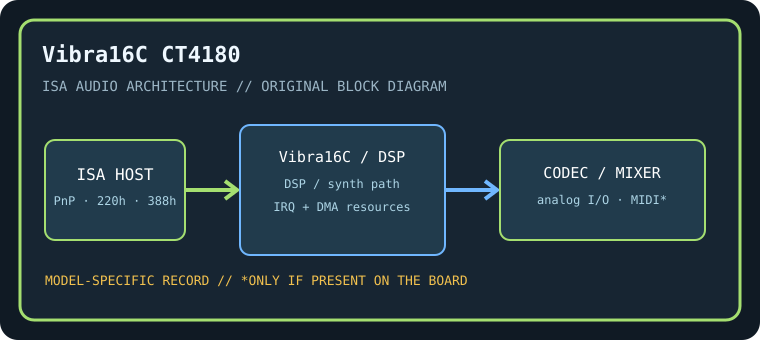

[ INDIVIDUAL COMPONENT // SOUND HARDWARE ]
Creative Vibra16C (CT4180)
The CT4180 is an ISA Vibra16C board, distinct from the Sound Blaster 16 CT17xx cards and later PCI Vibra models. The exact CT number is essential because Vibra revisions integrate different logic.

Model-specific specifications
| Catalog identity / chipset / DSP | Creative Vibra16C (CT4180). Creative Vibra16C integrated audio controller / SB16-compatible DSP functions; inspect the package marking and board revision. FM synthesis circuitry is board/revision dependent. |
|---|---|
| Audio codec / conversion | Integrated Vibra16C PCM codec path providing 8/16-bit conversion; do not claim separate CT170x codec chips without confirming the CT4180 board population. |
| Bus / I/O / ports | 16-bit ISA. ISA Plug and Play resources usually expose SB base 220h, FM 388h, and MIDI 330h; exact decodes are assigned by PnP configuration and may be changed. |
| IRQ | PnP IRQ, commonly 5, 7, or 10; verify configuration report and avoid conflicts with serial/parallel or storage controllers. |
| DMA | PnP 8-bit DMA often channel 1 and 16-bit DMA often channel 5; use the assigned pair recorded by configuration utility. |
| Driver / operating system | Creative DOS PnP utilities/setup plus SB16-compatible DOS interface; Creative Windows 3.x/9x driver package matched to Vibra16C. No contemporary OS support is inferred. |
| Motherboard compatibility | ISA PnP BIOS or Creative software initialization is needed for reliable automatic resource assignment. Verify 16-bit ISA slot, IRQ/DMA availability, and resource retention on each motherboard. |
| Sound standards / interfaces | Sound Blaster 16 digital audio, AdLib-compatible FM where populated, and UART MIDI conventions; no AWE wavetable synthesis is implied. |
| Connectors / power | ISA slot power; use only the analog, MIDI, CD-audio, and auxiliary connectors physically present on this exact board. Inspect the edge bracket, keyed headers, PCB revision, and manual before connecting. |
Compatibility & preservation notes
The CT4180 is an ISA Vibra16C board, distinct from the Sound Blaster 16 CT17xx cards and later PCI Vibra models. The exact CT number is essential because Vibra revisions integrate different logic. The precise DSP/codec package, firmware, resource assignment, and OS driver release must be matched to the physical SKU. Record the actual base port, IRQ, DMA channels, driver version, motherboard chipset, and BIOS configuration used in a working test rather than copying family defaults.
- Photograph the complete model number, PCB revision, major IC markings, jumpers, connectors, and any daughterboard before service.
- Check DMA and IRQ reservations against storage, serial/parallel, and other ISA devices; test PCM, synthesis, and MIDI functions independently.
- Power down and unplug the host before fitting/removing ISA hardware. Keep the exact manual and original setup/driver media with the specimen.
Manufacturer manuals & archival sources
- Internet Archive — Creative Vibra16C CT4180 manualArchive catalog search for original manufacturer-authored manual/setup documentation for this model; confirm the full SKU and revision in any scan.
- Internet Archive — Creative CT4180 driver and DOS configuration diskArchive catalog search for preserved manufacturer driver, utility, or bundled software media for this specific board.
- Internet Archive — Creative Vibra16C CT4180 documentation archiveAdditional model-specific catalog records and manuals; use the physical board marking to exclude adjacent revisions and related products.
Archive search links are discovery records rather than claims that one particular scan is an original; verify provenance, revision and completeness before relying on a scanned setup guide.